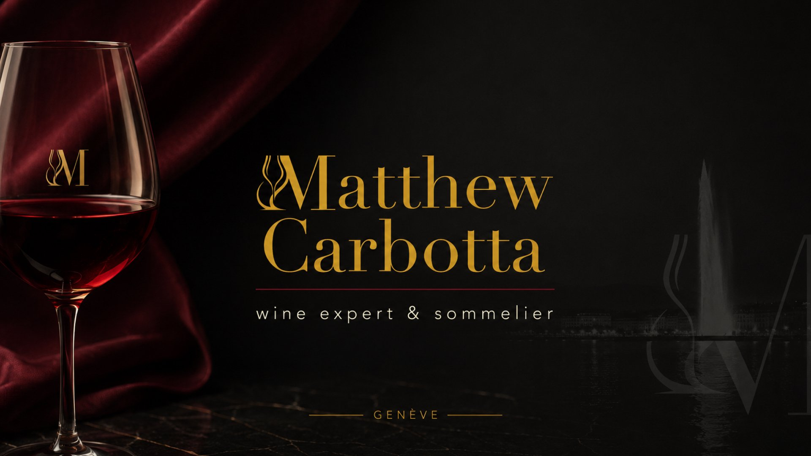
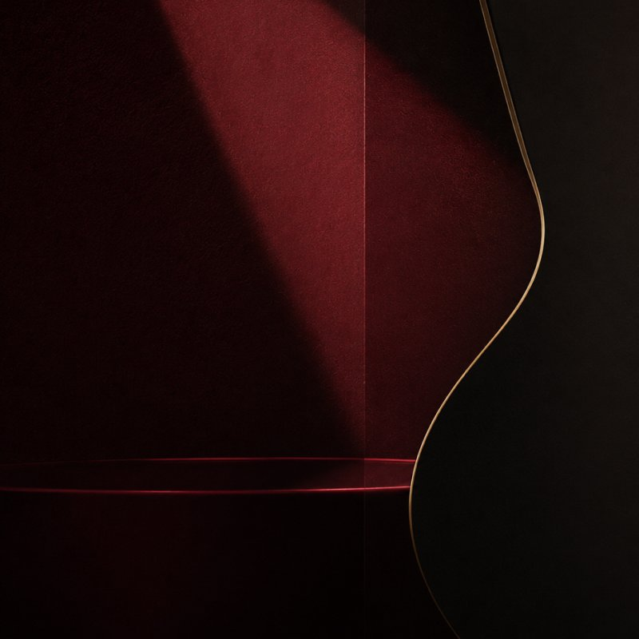

Matthew Carbotta
Logo design e brand identity

Una figura, molti ruoli — un segno solo.
Matthew Carbotta è sommelier, manager di due ristoranti a Ginevra, fondatore di una società di distribuzione vini e organizzatore di eventi privati di degustazione.
La sua identità doveva tenere insieme tutte queste declinazioni senza disperdere il centro — un'autorevolezza personale che precede e attraversa ogni ruolo professionale.
"Il calice ha una potenza simbolica unica — dalla religione al Sacro Graal, è fonte di potere, seduzione, offerta e scoperta. Aveva già tutto per diventare un marchio."

La silhouette del calice si fonde con la M di Matthew generando un logotipo unico — riconoscibile come firma e utilizzabile come monogramma autonomo. Un segno che non illustra il vino: lo evoca attraverso la forma, il peso, la presenza.
Funziona in grande sull'insegna di un evento e in piccolo sul retro di un biglietto da visita.
Il sistema è costruito per crescere con la figura professionale di Matthew. Al centro il monogramma — un segno forte abbastanza da funzionare da solo su qualsiasi superficie. Intorno, una palette di bordeaux dorato, nero-grigio e bianco perla caldo che definisce il territorio cromatico del brand senza sovraccaricarlo. La tipografia affianca Didot — serif di tradizione francese, contrasto estremo tra pieni e filetti — ad Avenir Next per le declinazioni funzionali. Un modulo essenziale oggi, pronto a espandersi in un sistema più articolato nel tempo: carta da lettera, materiali evento, presenza digitale, packaging.


